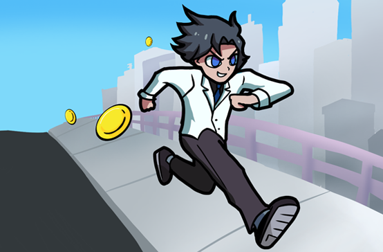

What is Fool's Gold?
You play as Jim, a billionaire, who falls in love with Cathy, a humble girl from the countryside. In order to win her over, Jim must prove that he's not consumed by materialism and riches. Fool's Gold is a 2D platformer where you avoid gold coins because they make you heavier and decrease your jump height.
Roles: Producer, 2D Artist, UI
Team Size: 4
Project Length: 1 Week
Responsibilities: Organized tasks following a SCRUM framework, track daily progress and log it in Trello, created all art assets except the character running sprite and end of game illustration
Status: Completed
Summary of Responsibilities
I organized tasks in Google Sheets following a SCRUM framework for 3 sprints.
I tracked daily progress and log tasks in Trello.
I facilitated group discussions in discord regarding game's creative direction.
I created almost all art assets, including the main menu illustartion, background, platform, obstacles, UI assets, and female character sprite.

Screenshots

Main Menu
Main menu illustration I created of Jim running through the city avoiding coins.

In Game Level
The player will experience simple obstacles such as hanging platforms and open ledges.

In Game Level
One of the more difficult parts of the level to avoid coins since coins and obstacles are much closer to one another.

End of Level Destination
Once the player runs to Cathy, the player reaches the end and wins the game (and her heart!).